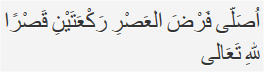

Tata caranya sebagai berikut:
Berniat salat dengan cara qasar. Jika dilafalkan sebagai berikut:

”Ushalli fardhal 'ashri raka'ataini qashran lillaahi-ta'aala”
Artinya: “Saya berniat salat ashar dua rakaat diqashar karena Alla Ta’ala”